PRINCIPAIS TÍTULOS DA HISTÓRIA
Mário Bros (Nintendo)
Mario é um encanador criado pela Nintendo em 1981. Ele vive aventuras com seu irmão Luigi para salvar a Princesa Peach do vilão Bowser no Reino dos Cogumelos. O jogo Super Mario Bros (1985) o tornou famoso mundialmente. Desde então, Mario protagoniza vários jogos de sucesso em 2D e 3D, sendo o símbolo da Nintendo e um dos personagens mais conhecidos dos videogames.
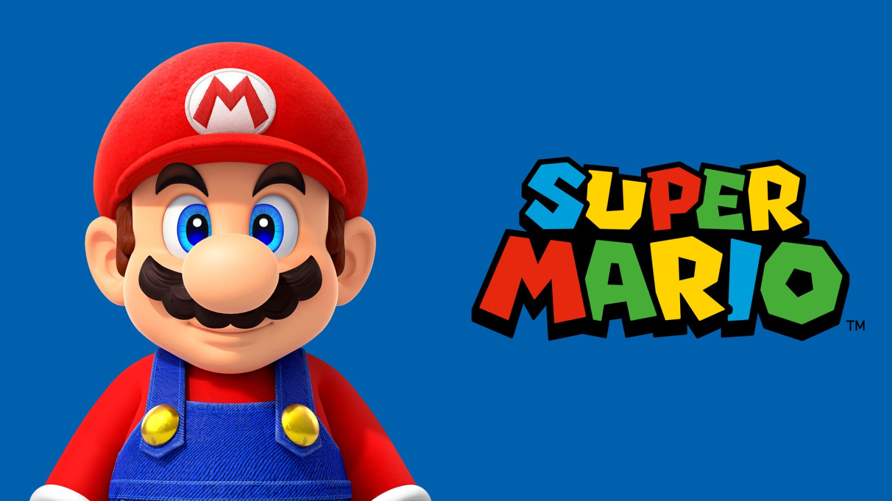
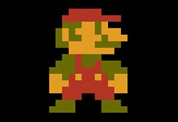
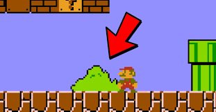
Donkey Kong (Nintendo)
Donkey Kong é um dos primeiros grandes sucessos da Nintendo, lançado em 1981. No jogo original, o gorila Donkey Kong sequestra Pauline, e o herói Mario (então chamado Jumpman) precisa resgatá-la. O jogo marcou o início das carreiras de Mario e Donkey Kong. Mais tarde, Donkey Kong virou o herói de sua própria série, vivendo aventuras na Ilha Donkey Kong para proteger suas bananas do vilão King K. Rool. A franquia se tornou um clássico dos videogames, com títulos de grande sucesso como Donkey Kong Country.
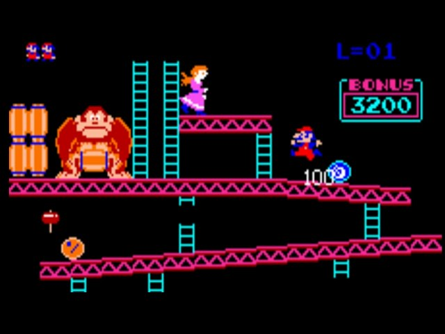
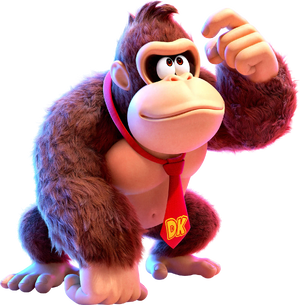
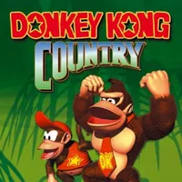
Sonic (Sega)
Sonic the Hedgehog é o mascote da SEGA, criado em 1991. Ele é um ouriço azul superveloz que luta para impedir o vilão Dr. Eggman (ou Robotnik) de dominar o mundo usando robôs. Nos jogos, Sonic corre por fases cheias de loopings e anéis dourados, libertando animais presos em máquinas. Com o tempo, ganhou aliados famosos como Tails, Knuckles e Amy. A série se tornou um dos maiores sucessos dos videogames e um símbolo da SEGA, rival da Nintendo.
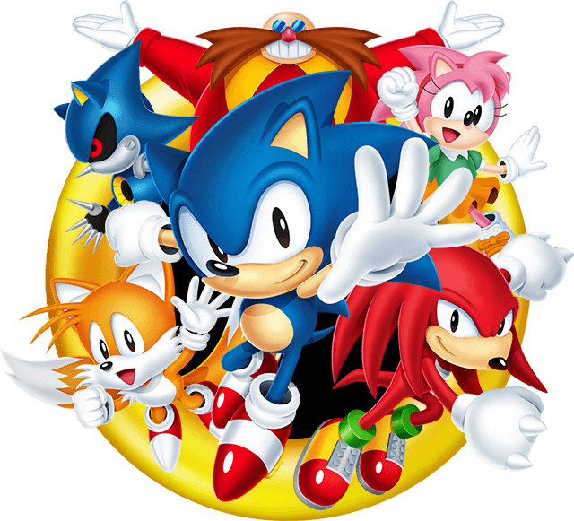
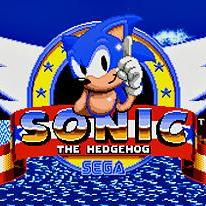
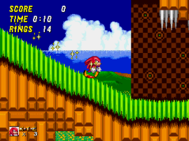
Crash Bandicoot (Sony Playstation)
Crash Bandicoot é um jogo criado pela Naughty Dog e lançado em 1996 para o PlayStation. O protagonista, Crash, é um marsupial que precisa impedir o cientista malvado Dr. Neo Cortex de dominar o mundo. Com ajuda de Aku Aku, uma máscara mágica protetora, Crash enfrenta fases cheias de armadilhas, saltos e inimigos. A série ficou famosa pelo seu humor, desafios de plataforma e gráficos 3D, tornando-se um dos maiores ícones do PlayStation.

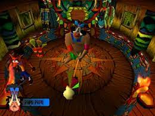
Halo (Microsoft XBOX)
Halo é uma série de jogos de tiro criada pela Bungie e lançada pela Microsoft em 2001 para o Xbox. A história acompanha o soldado super-humano Master Chief e sua inteligência artificial Cortana lutando contra alienígenas conhecidos como o Covenant. O jogo se passa em um universo futurista e gira em torno dos misteriosos anéis chamados Halos, armas capazes de destruir toda a vida. A franquia se tornou um dos maiores sucessos do Xbox e um marco nos jogos de tiro em primeira pessoa.
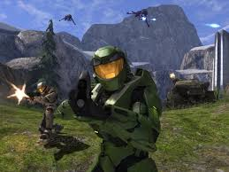
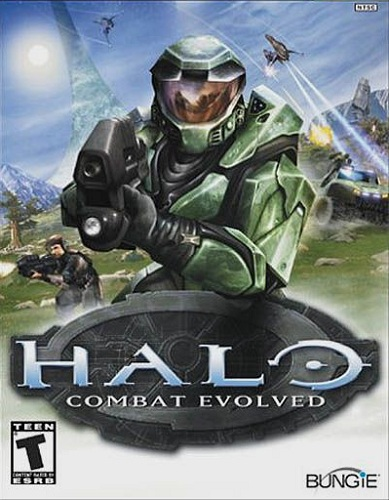